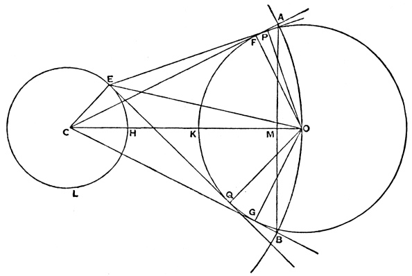

Quantitative Reasoning
1015SCG
Lecture 8

Enrico Fermi
|
Enrico Fermi (1901-1954) was an Italian physicist known for his major contributions to nuclear physics, quantum theory, and statistical mechanics.
|

|
The Fermi Paradox
|
The Fermi Paradox asks why, given the vast size of the universe and the likelihood of extraterrestrial life, we have not yet observed any clear evidence of it.
|
|
The Fermi Paradox
We know that we live in a big old galaxy, in a big old universe
Consider for a moment the Milky Way Galaxy

The Fermi Paradox
- The Milky Way Galaxy has about 400 billion suns 🌞
- Most of those suns have planetary systems around them.
So, there are trillions of planets.
The galaxy it's been around for about 13 billions years.
Even though there have been billions of years on billions of worlds
for civilizations to arise,
we see no evidence of any of them in the galaxy at all. 😬
The Fermi Paradox
Where is everybody?
Source: Hubble Space Telescope - Ultra-Deep Field galaxies to Legacy field zoom out (May 2, 2019) Wikipedia
Fermi Problems
Fermi problems are estimation questions that use rough assumptions and simple calculations to obtain approximate answers.
- Emphasise order-of-magnitude reasoning.
- Encourage critical thinking and modelling.
- Common in physics and mathematics education.
An example is Enrico Fermi's estimate of the strength of the atomic bomb that detonated at the Trinity test, based on the distance traveled by pieces of paper he dropped from his hand during the blast. Fermi's estimate of 10 kilotons of TNT was well within an order of magnitude of the now-accepted value of 21 kilotons.
Not good for Fermi problems ❌
- How much Panadol can I take in a day?
- How long will the air in my scuba tank last?
- How much weight can this bridge support?
Good for Fermi problems ✅
-
Is it more expensive to travel to Melbourne by
plane ✈️ or by car 🚗? - How many people are on Social Media (𝕏/FaceBook/TikTok) right now 🤳?
- How much water 💦 is flushed down toilets 🚽 each year?
- How many grains of sand are there in the world 🌏?
Fermi problems: Strategy
- Work out what the question is asking you.
-
Work out your steps, and how they go together:
- What do you know?
- What are you assuming?
- Use dimensional analysis
-
Estimate the unknowns:
- Geometric mean of underestimate and overestimate.
-
Combine to obtain an order of magnitude estimate
- Use rounding (usually to 1 s.f.) and scientific notation.
- Interpret answer through comparison with known quantities.
- Refine your steps.
Arithmetic mean
$AM = \bar{x} =\dfrac{1}{n}\ds \sum_{i=1}^{n}x_i$
Average of $n$ numbers $x_i$
|
$\bar{x} =\dfrac{0.81+0.9+0.94+0.85+0.88}{5}$ $\quad =0.876 \text{ m}$ |
|
Geometric mean
$GM = \ds \left(\prod_{i=1}^{n} x_i\right)^{1/n}$
Multiplicative average of $n$ positive numbers $x_i$
|
$GM = \left(0.81 \times 0.9 \times 0.94 \times 0.85 \times 0.88\right)^{1/5}$ $\;\;\;\quad \approx 0.875 \text{ m}$ |
|
Geometric mean
How to estimate unknown values?
- Find underestimate.
- Find overestimate.
- Calculate their geometric mean.

📝 Examples
🚽 Toilet tank
What is the volume of a toilet cistern (the tank where water is stored)?
Underestimate: 1L
Overestimate: 50L
$GM = \sqrt{1\text{ L} \times 50 \text{ L}}$ $\approx 7 \text{ L}$
Overestimate: 25L
$GM = \sqrt{1\text{ L} \times 25 \text{ L}}$ $\approx 5 \text{ L}$
😴 People sleeping
How many people in the world are sleeping at the moment?
Assume people sleep for 6hrs a day.
Fraction of the time sleeping: \(\dfrac{6\text{ h}}{24\text{ h}}\) \(=\dfrac{1}{4}\)
Amount sleeping = Number of people $\times$ fraction sleeping $\qquad$
$\qquad\qquad$\(\approx\) 8 billion people $\times \dfrac{1}{4} $ \(\approx\) 2 billion people
Recall: Scientific notation
A number is in normalized scientific notation if it is in the form \[ \large \pm r \times 10^n \]
- $r$ is a real number (called the significand) with $1 \leq r \lt 10$.
- $n$ is an integer (called the exponent).
Recall: Scientific notation
It is easy to compare numbers! 😃
Example:
How many orders of magnitude there is between 2 mL and 80 L?
\(\dfrac{80 \text{ L}}{2 \text{ mL}}\) \(=\dfrac{80 \text{ L}}{2 \text{ mL}} \times \dfrac{1000 \text{ mL}}{1 \text{ L}}\) \(=\dfrac{80\,000 }{2 }\) \(=40\, 000\) \(=4\times 10^4\)
There are about 4 orders of magnitude between 2 mL and 80 L
Recall: Scientific notation
It is easy to find the geometric mean
\(\sqrt{10^a \times 10^b}\) \(=\sqrt{10^{a+b}}\) \(=10^{\frac{a+b}{2}}\)
Example:
Find the geometric mean of $40000$ and $0.00006$.
\(\sqrt{4\times 10^4 \times 6\times 10^{-5}}\) \(=\sqrt{24\times 10^{-1}}\) \(=\sqrt{2.4}\) \(\approx 1.5\)
Find the geometric mean of $10,000,000$ and $0.004$.
\(\sqrt{10^7\times 4\times ^{-3}}\) \(=\sqrt{4\times 10^4 }\) \(=\sqrt{4}\sqrt{ 10^{4}}\) \(=2\times 10^{4/2}\) \(=2\times 10^2\) \(=200\)
🧻 Toilet paper
How much toilet paper do we use in Australia each year?
We are looking for $\dfrac{\text{rolls}}{\text{year}}$
How many times a person visits the toilet?
Underestimate: $\;1 \dfrac{\text{visit}}{\text{day}}$
Overestimate: $\;25 \dfrac{\text{visit}}{\text{day}}$
$N_t = \sqrt{25}$ $=5$
🧻 Toilet paper
How much toilet paper do we use in Australia each year?
We are looking for $\dfrac{\text{rolls}}{\text{year}}$
What is the amount used each visit?
Underestimate: $\;1 \dfrac{\text{sheet}}{\text{visit}}$
Overestimate: $\;20 \dfrac{\text{sheet}}{\text{visit}}$
$N_p = \sqrt{20}$ $\approx 4.47$ $\approx 4$
🧻 Toilet paper
How much toilet paper do we use in Australia each year?
Thus we have $\;N_t =5 \dfrac{\text{visit}}{\text{day}}\;$ and $\;N_p = 4 \dfrac{\text{sheet}}{\text{visit}}$
How many sheets of toilet paper does a person use in a year?
$N_t \times N_p \times \dfrac{365.25\text{ days}}{\text{year}}$
$5 \dfrac{\text{visit}}{\text{day}} \times 4 \dfrac{\text{sheet}}{\text{visit}} \times \dfrac{365.25\text{ days}}{\text{year}}$ $=7305\dfrac{\text{sheets}}{\text{year}}$
🧻 Toilet paper
How much toilet paper do we use in Australia each year?
$5 \dfrac{\text{visit}}{\text{day}} \times 4 \dfrac{\text{sheet}}{\text{visit}} \times \dfrac{365.25\text{ days}}{\text{year}}$ $=7305\dfrac{\text{sheets}}{\text{year}}$
🧻 Assume: $\;200 \dfrac{\text{sheets}}{\text{roll}}$
Then we have $\;\dfrac{7305\dfrac{\text{sheets}}{\text{year}}}{200 \dfrac{\text{sheets}}{\text{roll}}}$ $\approx 37 \dfrac{\text{rolls}}{\text{year}}$ per person
Population of Australia $\approx 28$ million $=2.8\times 10^7$
🧻 Toilet paper
How much toilet paper do we use in Australia each year?
Population of Australia $\approx 28$ million $=2.8\times 10^7$
👉$\;\; 37 \dfrac{\text{rolls}}{\text{year}}$ per person
Therefore $\;37 \dfrac{\text{rolls}}{\text{year}}\times 2.8\times 10^7 $ $\approx 10^9 \dfrac{\text{rolls}}{\text{year}}$
💨 Air we breathe
How much air would you breathe in a year?
Try it yourself! 📝 😃
Archimedes' Sand Reckoner
|
See: THE SAND-RECKONER |
In The Sand Reckoner, Archimedes asked: “How many grains of sand would be needed to fill the universe?”
|
A 3rd-Century BCE Fermi Problem
|
Archimedes' strategy closely mirrors modern Fermi reasoning:
The goal was not precision — but order of magnitude. |
 See: THE SAND-RECKONER |
The Result
Archimedes concluded that the universe could be filled with fewer than
\(10^{63}\) grains of sand.
To express such numbers, he developed a system extending beyond the Greek “myriad” (10,000).
Like modern Fermi problems, this was an exercise in structured estimation, scaling, and mathematical imagination.

The Result
Even though $10^{63}$ is unimaginably large, it is still 17 orders of magnitude smaller than the number of atoms in the observable universe, estimated at roughly $10^{80}$.
|
Archimedes was already thinking on a cosmic scale — 2 200 years before modern astronomy. |
|
Taylor series
Any function $f(x)$ can be rewritten as an infinite sum \[f(x)= a_0 + a_1 x + a_2x^2 + a_3x^3+\cdots a_nx^n + \cdots\]
Example:
\(e^x \) \(= 1 +x + \dfrac{x^2}{2!}+ \dfrac{x^3}{3!} + \cdots + \dfrac{x^n}{n!}+ \cdots\)
where $n! = 1 \times 2 \times 3 \times \cdots \times (n-1) \times n.$
Taylor series: Useful approximations, if $x$ is small
Truncating the Taylor series at second order gives useful approximations:
| Function | 2nd-order Taylor approx. |
| $e^x$ | $1 + x + \dfrac{x^2}{2}$ |
| $(1+x)^n$ | $1 + nx + \dfrac{n(n-1)}{2}x^2$ |
| $\ln(1+x)$ | $x - \dfrac{x^2}{2}$ |
| $\sin x$ | $x$ |
| $\cos x$ | $1 - \dfrac{x^2}{2}$ |
| $\tan x$ | $x$ |
These approximations are valid when $|x| \ll 1$.
Taylor series
Change the function in the input box. Drag slider to increase the number of terms in the Taylor series.
📝 Practice
Using Taylor approximations:
- Estimating $e^{0.05}$.
- Estimate $\cos(0.1)$.
Estimating $e^{0.05}$ using Taylor approximations
\( \ds e^x = 1 + x + \frac{x^2}{2!} + \frac{x^3}{3!} + \cdots \)
| Approximation order | Expression | Estimate for $x=0.05$ |
| First order | $1 + x$ | $1 + 0.05$$\,=1.05$ |
| Second order | $1 + x + \dfrac{x^2}{2}$ | $1 + 0.05 + \dfrac{(0.05)^2}{2}$$\,=1.05125$ |
| Third order | $1 + x + \dfrac{x^2}{2} + \dfrac{x^3}{6}$ | $1.05125 + \dfrac{(0.05)^3}{6} \approx 1.05127$ |
| Calculator | $e^{0.05}$ | $\approx 1.051271096376024\ldots$ |
Higher-order approximations give better accuracy for small $x$.
📝 Practice: Estimate $\cos(0.1)$ using Taylor approximations
\( \ds \cos x = \; \large ??? \)
| Approximation order | Expression | Estimate for $x=0.1$ |
| First order | ||
| Second order | ||
| Third order | ||
| Calculator |
Odd-power terms vanish for $\cos x$, so first- and third-order approximations coincide.
Estimating $\cos(0.1)$ using Taylor approximations
\( \ds \cos x = 1 - \frac{x^2}{2!} + \frac{x^4}{4!} - \cdots \)
| Approximation order | Expression | Estimate for $x=0.1$ |
| First order | $1$ | $1$ |
| Second order | $1 - \dfrac{x^2}{2}$ | $1 - \dfrac{(0.1)^2}{2} = 0.995$ |
| Third order | $1 - \dfrac{x^2}{2}$ | $0.995$ |
| Calculator | Exact value | $\cos(0.1) \approx 0.995004165\ldots$ |
Odd-power terms vanish for $\cos x$, so first- and third-order approximations coincide.
📝 Practice: Population
The population of the bacteria in the sample is given by \[ \large P(t) = 500 e^{0.001t} \] where $t$ is given in weeks.
Consider a second order approximation of $e^t$.
- What will be population after 2 weeks?
- When will the population reach 505?
- Compare results to the exact values.
📝 Practice: Population — Solution
Using a second-order Taylor approximation for \( e^t\): \( \ds \;e^x \approx 1 + x + \frac{x^2}{2}. \)
-
Population after 2 weeks:
\[ P(2) \approx 501.001 \quad (\text{Exact: } 501.001001) \] -
Time when the population reaches 505:
\[ t \approx 9.95 \text{ weeks} \quad (\text{Exact: } 9.95033 \text{ weeks}) \] -
Comparison:
The Taylor approximation gives values virtually identical to the exact model.
📝 Practice: Population — Step 1: Taylor Approximation
We approximate the exponential function using a second-order Taylor expansion around 0:
$$e^x \approx 1 + x + \frac{x^2}{2}$$
For our population model $\,P(t) = 500 e^{0.001t},\,$ we use $$e^{0.001t} \approx 1 + 0.001t + \frac{(0.001t)^2}{2}$$
📝 Practice: Population — Step 2: Population after 2 Weeks
Using the approximation:
$P(2) = 500 \cdot \left(1 + 0.001 \cdot 2 + \dfrac{(0.001 \cdot 2)^2}{2}\right)$
Step-by-step calculation:
$0.001 \cdot 2 = 0.002$
$\dfrac{(0.002)^2}{2} = 0.000002$
$1 + 0.002 + 0.000002 = 1.002002$
$P(2) = 500 \cdot 1.002002 = 501.001$
📝 Practice: Population — Step 3: Time to Reach 505
Solve $P(t) = 505$ using the second-order approximation:
$500 \cdot \left(1 + 0.001t + \dfrac{(0.001t)^2}{2}\right) = 505$
Divide both sides by 500:
$1 + 0.001t + \dfrac{(0.001t)^2}{2} = 1.01$
Let $x = 0.001t,$ then solve:
$\ds 1 + x + \frac{x^2}{2} = 1.01 $ $\Ra \ds \frac{x^2}{2} + x - 0.01 = 0$
Solve quadratic: $x \approx 0.00995 \rightarrow t \approx 9.95$ weeks
📝 Practice: Population — Step 4: Comparison
Comparing the second-order Taylor approximation with exact values:
- Population after 2 weeks: 501.001 (approx) vs 501.001001 (exact)
- Time to reach 505: 9.95 weeks (approx) vs 9.95033 weeks (exact)
The approximation gives results virtually identical to the exact model for such small exponents.
That's all for today!See you in Week 9! 
|
|